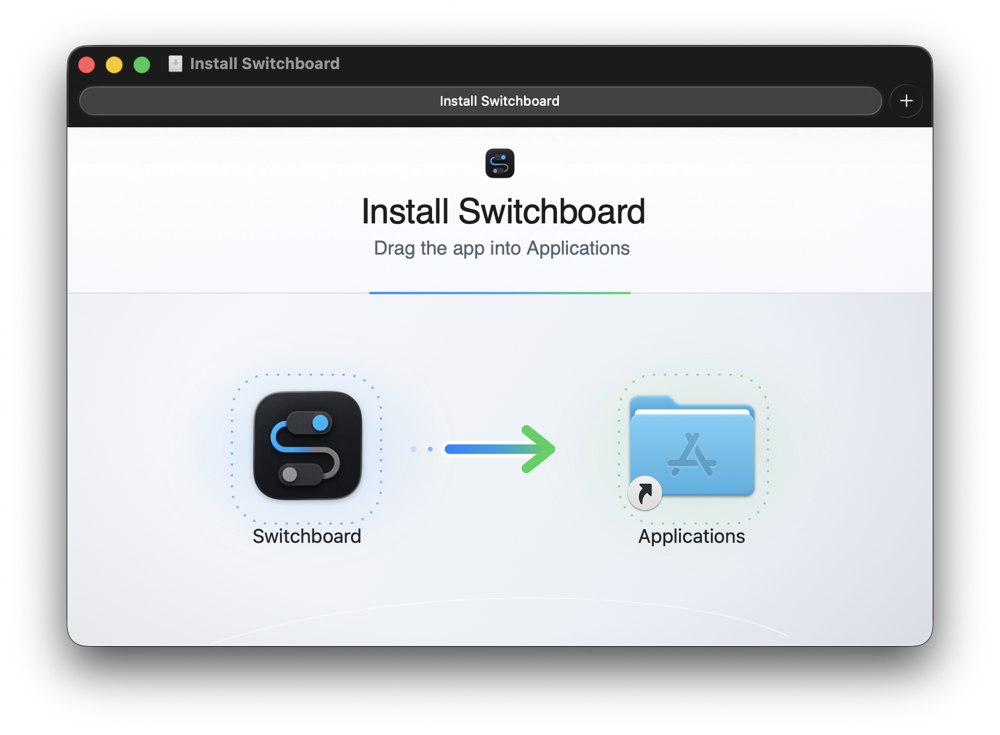

إحاطة بيئة محلية
قراءة واحدة مهيكلة تشمل الوقت والمنطقة الزمنية وضغط الذاكرة والمعالج ونماذج الذكاء الاصطناعي الساخنة والجلسات القديمة وتعارضات المنافذ وآخر أعطال الخدمات — لتعرف الأداة ما تواجهه عند بداية الجلسة.
macOS · Apple Silicon + Intel
يتعرّف سويتش بورد على الخدمات والمنافذ وبيئات تشغيل الذكاء الاصطناعي وعناصر الخلفية والجلسات القديمة، ثم يجمع حالتها وسجلاتها وإجراءات التحكم الآمنة في تطبيق أصلي واحد على شريط القوائم. نزّله مجانًا لإدارة الخدمات الأساسية. MCP ميزة ضمن Pro، وتتوافر أيضًا مع ترخيص Lifetime أو خلال التجربة الكاملة.
افتح ملف .dmg الذي نزّلته، واسحب Switchboard إلى مجلد
التطبيقات، ثم افتحه. هذا كل شيء.

إصدار Universal لأجهزة Mac بمعالجات Apple Silicon وIntel، مع macOS 12 (Monterey) أو أحدث.
مركز التحكم للذكاء الاصطناعي
قبل أن تتصرف أداة ذكاء اصطناعي على جهازك، يخبرها Switchboard — ويخبرك — بما يعمل، وما يسخن، وما بقي من جلسات قديمة، ومن يملك كل منفذ.
قراءة واحدة مهيكلة تشمل الوقت والمنطقة الزمنية وضغط الذاكرة والمعالج ونماذج الذكاء الاصطناعي الساخنة والجلسات القديمة وتعارضات المنافذ وآخر أعطال الخدمات — لتعرف الأداة ما تواجهه عند بداية الجلسة.
يكتشف Ollama وLM Studio وllama.cpp وخوادم MLX، ومساعدات الترميز مثل Claude Code وCursor وCodex — مع المنافذ ونسبة المعالج/الذاكرة ومسار المشروع، فلا تشغّل الأداة نسخة مكررة.
وصّل Claude Code وCursor وCodex وClaude Desktop وGemini CLI وغيرها عبر MCP محلي محمي — إجراءات منظمة بدلًا من سطر أوامر حر. ويشمل المجاني معاينة للقراءة فقط.
تُجمَّع الخدمات والمنافذ والسجلات وبيئات الذكاء الاصطناعي وجلسات الأدوات حسب المشروع — لتعرف أنت والأداة ما ينتمي إلى قاعدة الكود نفسها، لا قائمة عمليات مسطحة.
المطورون والمهندسون والمستخدمون المتقدمون الذين يشغّلون عدة أدوات محلية خلال يومهم.
اربط عمليات عامة مثل node وpython وollama بالخدمة والمشروع والمنفذ والموارد.
راجع إجراءات الخدمات ومعاملاتها الدقيقة من دون فتح سطر أوامر حر.
مع Pro أو Lifetime أو التجربة الكاملة، تحصل وكلاء الذكاء الاصطناعي المدعومة على سياق MCP وإجراءاته المحمية.
المنفذ هو رقم تستخدمه بعض الأدوات لتعمل على جهازك. Switchboard يربط كل منفذ باسم واضح، مثل اسم المشروع أو العملية، ويبرز التعارضات عندما يحاول أكثر من شيء استخدام الرقم نفسه.
بدلاً من رقم غامض أو رسالة تقنية، يعرض Switchboard هل الشيء يعمل، متوقف، يحتاج انتباهاً، أو غير معروف. هذا يكفي غالباً لتقرر هل تتركه أم توقفه.
السجل هو النص الذي تكتبه الأداة أثناء عملها. بدلاً من فتح عدة نوافذ Terminal، يدمج Switchboard سجلات الخدمات والملفات اليدوية ونشاط التطبيق في شاشة واحدة.
لقطات من التطبيق
توضح بيئة محلية خيالية كيف يحوّل سويتش بورد العمليات العامة إلى سياق يوضح الخدمة والمشروع والمنفذ والموارد.
أين يفيد؟
Activity Monitor يقول إن العملية اسمها node. أما سويتش
بورد فيوضح الخدمة والمنفذ ومدة التشغيل والإجراء الآمن.
التقط خوادم Vite أو Next.js أو FastAPI أو Rails الإضافية التي
انتقلت من 5173 إلى 5174 ثم
5175.
اعرف الخدمة المحلية وراء الضغط بدل التخمين من أسماء عمليات مثل
node أو python أو
docker أو ollama.
تذكّر قاعدة البيانات، والعامل الخلفي، والنفق، والأمر المخصص، والمستندات، والسجلات بدون إعادة اكتشاف كل شيء من الصفر.
الأسعار
المجاني يكفي للأساسيات. وPro ومدى الحياة يفتحان الأدوات المدفوعة نفسها.
بدون حساب. بدون مفتاح. بشكل دائم.
لإبقاء خدماتك ظاهرة وتحت السيطرة.
شهرياً · أو 299.99 ريالاً سنوياً
ادفع شهرياً أو سنوياً. يستمر الوصول ما دامت العضوية نشطة.
دفعة واحدة · ملكية دائمة
لـ Switchboard فقط، مع كل التحديثات المستقبلية، بصرف النظر عن أي عضوية.
الأسعار بالريال السعودي وتُدفع عبر Paylink. ترخيص مدى الحياة يعادل حوالي $39 دولار. يتطلب الشراء حساباً في azzuwayed.com، ويصلك المفتاح بالبريد بعد تأكيد الدفع. لديك كود خصم؟ أدخله عند الدفع.
يستمر جهاز Mac المفعّل بالعمل دون اتصال حتى 30 يوماً. إذا انتهت الترخيص، يعود Switchboard ببساطة إلى الاستخدام المجاني.
لماذا برمجت هذا التطبيق
أحياناً تجرّب مشروعاً، أو تشغّل أداة ذكاء اصطناعي، أو تفتح شيئاً مؤقتاً ثم تنساه. بعد يوم أو يومين يظل يعمل في الخلفية، والجهاز يسخن أو البطارية تنقص أسرع، لكن macOS لا يقول لك بوضوح ما السبب.
المشكلة تكبر مع أدوات مثل Cursor وClaude Code: تشغّل خوادم تجربة بسرعة، وأحياناً لا توقف النسخة القديمة قبل الجديدة، فيشتغل جهازك بأشياء لا تراها. Switchboard يضع الإجابات في مكان واحد: ما هذا؟ هل أحتاجه الآن؟ وهل أستطيع إيقافه؟ وكل أداة ذكاء اصطناعي تستخدمها تستطيع قراءة هذا السياق المحلي قبل أن تتصرف. النظام لن يخبرها. الأدوات لن تسأل. Switchboard سيفعل.
بنى Switchboard عبدالله الزويد كمطور مستقل. أبقيته محلياً لأنني أردت هذه الأداة على جهازي.
Switchboard مصمم ليكون مفيداً دون أن يتحوّل إلى سطر أوامر داخل الواجهة — ودون أن يمنح أدوات الذكاء الاصطناعي وصولاً مباشراً إلى shell جهازك.
نعم. يشمل المجاني خدمات غير محدودة، وأدوات النشاط والمستندات والمراقب والمنافذ والصيانة كاملة، ومعاينة MCP للقراءة فقط، وإشعارات توقّف الخدمات وظهور منفذ جديد — بدون حساب أو بطاقة أو إعلانات. وتحصل التثبيتات الجديدة على تجربة كاملة لمدة 7 أيام.
يفتح azzuwayed Pro وترخيص Switchboard مدى الحياة البث وسجلات النظام والموارد ووقت التشغيل والقياسات وتشغيل MCP. يتطلب الشراء حساباً في azzuwayed.com: سجّل الدخول داخل Switchboard لاستخدامه، أو الصق مفتاح مدى الحياة المرسل إلى بريدك في الإعدادات ← الترخيص والوصول. اطّلع على الأسعار.
يعمل ترخيص مدى الحياة على 3 أجهزة Mac كحد أقصى في آنٍ واحد. وتُدار أجهزة azzuwayed Pro من حسابك في azzuwayed.com.
للانتقال إلى جهاز Mac جديد، ألغِ التفعيل على القديم (الإعدادات ← الترخيص والوصول ← إلغاء التفعيل)، ثم سجّل الدخول أو أدخل مفتاحك على الجديد. وإن بعتَ الجهاز القديم أو فقدته أو مسحته، افتح طلب دعم خاصاً ليتم التحقق من مكانه وإعادة تعيينه.
استخدم إرسال ملاحظات داخل Switchboard — يرفق نسخة التطبيق والتشخيصات التي تختارها فقط. ويستطيع العملاء المسجّلون أيضاً فتح دعم خاص؛ وإن لم تستطع تسجيل الدخول فاستخدم نموذج الزوار.
نعم. يراقب Switchboard المنافذ والعمليات مباشرة، فإذا شغّلت أداة ترميز بالذكاء الاصطناعي خادم Vite أو FastAPI اكتشفه ووضع عليه علامة مُكتشَف وعرض زر إيقاف مع تأكيد — دون تخمين أي أداة شغّلته.
ومع Pro أو ترخيص مدى الحياة تستطيع هذه الأدوات الاتصال عبر MCP — Claude Code وCursor وVS Code وCodex وClaude Desktop وGemini CLI وأي عميل متوافق مع MCP — عبر مقبس محلي خاص وليس منفذ شبكة. ويستطيع الجميع معاينة ملفات MCP وأساليبه.
مديرو المنافذ يساعدون الأداة على اختيار منفذ فارغ قبل تشغيل الخادم، وإيقاف منفذ يدوياً إجراء لمرة واحدة. أما Switchboard فيعطيك الصورة الدائمة والشاملة لجهازك — ما الذي يعمل، وما الذي يستهلك البطارية والمعالج، ومن يملك كل منفذ — مع طريقة آمنة للإيقاف وإعادة التشغيل. استخدمهما معاً: التنسيق يقرر أين تبدأ الأشياء، وSwitchboard يريك ما ينتهي به الأمر قيد التشغيل.
تبقى إعدادات الخدمات والسجلات والمستندات والموافقات على جهاز Mac. قد يتضمن فحص التحديث إشارة مجهولة وإجمالية للتثبيتات النشطة، من دون حساب أو معرف جهاز أو تثبيت ومن دون تخزين عنوان IP خام. وتستخدم خيارات تسجيل الدخول والترخيص والدعم والفحوصات المعدة وفحوص التوفر الوجهات المذكورة لها. ولا يفتح التطبيق منفذًا يستقبل اتصالات شبكية.
أوقف الإحصاءات من الإعدادات ← الخصوصية (يبقى التحديث يعمل)، أو عطّل فحص التحديثات بالكامل. Switchboard برنامج مملوك ومصدره غير متاح للعامة.
macOS 12 (Monterey) أو أحدث، على Apple Silicon وIntel. الإصدارات المباشرة بصيغة Universal.
يفحص التطبيق مرة في اليوم هل يوجد إصدار جديد ويعرض شريطاً داخل
التطبيق. ثم ينزّل التحديث ويتحقق من توقيعه الرقمي ويثبّته
ويطلب منك إعادة التشغيل. تفضّل التنزيل بنفسك؟ عطّل
التحقق من التحديثات تلقائياً في الإعدادات، ثم حمّل
ملف .dmg من
صفحة الإصدارات.
لإزالة التثبيت، أوقف Switchboard من شريط القائمة ثم اسحب
Switchboard.app إلى المهملات. وأزل
~/Library/Application
Support/com.azzuwayed.switchboard/
أيضاً إن أردت حذف إعداداتك.